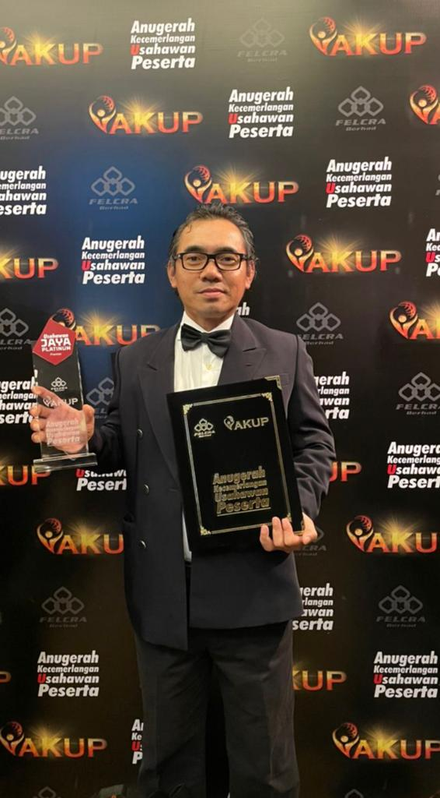

Ir. Ts. Hj. Zamhuri bin Hj. Drahman
Managing Director of Zadra Ingénieurs with 25+ years’ experience in civil and structural engineering. Recognised for hands-on leadership, technical integrity, and a passion for mentoring young engineers to deliver infrastructure that balances functionality, economy and aesthetics.
- Role: Managing Director
- Experience: 25+ years, Sarawak & Malaysia
- Focus: Airports, highways, public infrastructure, education & religious buildings
Professional Registration
- Professional Engineer (BEM)
- Professional Technologist (MBOT)
- ASEAN Chartered Professional Engineer (ACPE)
- Associate ASEAN Engineer (AAE)
- Senior Member, IEM (SMIEM)
- Qualified Person, SPA; Member, MAE
Education
- Master of Engineering (Civil), UNIMAS
- B.Eng (Hons) Civil, UTM
- GDBA – Airport Engineering, National University of Singapore
- Diploma in Computer Technology, INFOMATICS
- Diploma in Civil Engineering, UTM
Awards
- Anugerah Usahawan Jaya Platinum (2022)
- Emerging Consulting Engineer (C&S) (2023)
Leadership & Approach
Champions collaborative design and BIM-enabled workflows to ensure quality, buildability and lifecycle value. Mentors the team to uphold engineering ethics, safety and sustainability across all projects.
View the Team